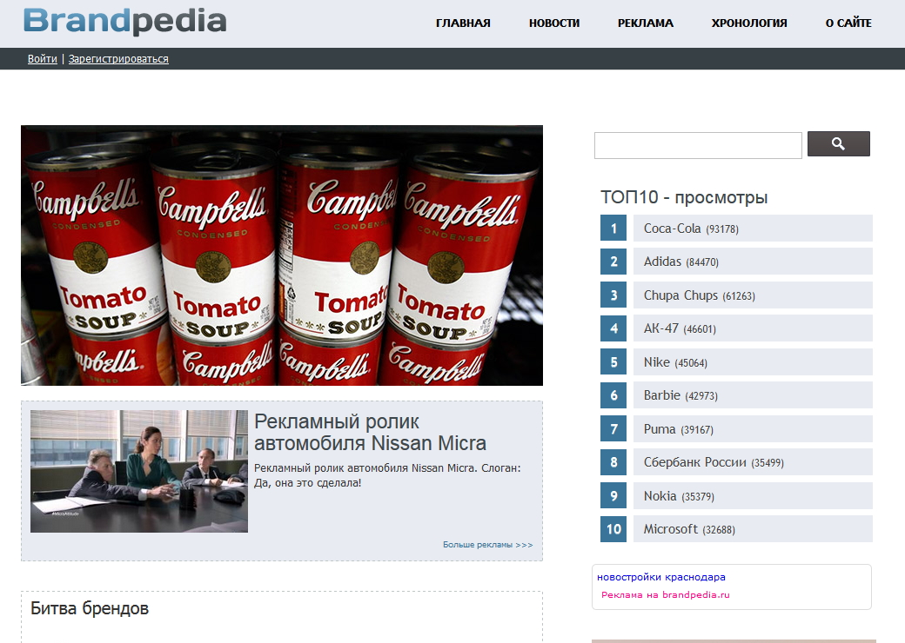
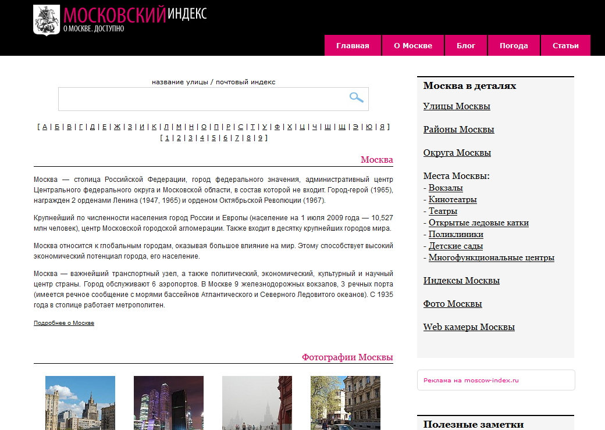

hostmind.ru

HostMind
hostmind.ru
hostingservicesportal
архив внедренийSLAED CMS
SLAED — модульная CMS с открытым исходным кодом: управление контентом, пользователями, файлами, поиском и расширениями в одной системе. Никакой SaaS-зависимости — сервер, данные и код остаются под вашим контролем.
включено 8 из 685 · нажмите модуль

Не макеты — реальные внедрения из архива проекта.
Один движок, совершенно разные задачи и визуальные языки. Вместо бесконечного списка — компактная витрина реальных проектов с полностраничными архивными скриншотами.




Интернет идёт к «дому» SLAED: люди, поисковики, AI и обычные боты проходят; красные вредоносные запросы попадают в карантин.
Генерация, SQL и живая работа PDO — без отдельного «листинга кода» в архитектурной схеме.
SELECT id, title FROM slaed_news WHERE cat = :cat LIMIT ?
:cat=2?=10
name = "blocks"slaed-language = "ru"
slaed-stats = "…"
slaed-account = "…"panel = "authenticated"
csrf = "••••••••"SELECT name, ip, super FROM …admins WHERE id = :idSELECT password FROM …users WHERE id = :id AND name = :nameSELECT title, content FROM …blocks WHERE bkey = 'admin'SELECT uname, time, ip, guest, modul, url FROM …session ORDER BY unameSELECT id, bkey, title, bpos, weight, status FROM …blocks ORDER BY bpos, weightНе обещания «проект развивается» — реальная история master из GitHub.
Один канонический window-frame вместо ручных копий; файловые менеджеры получают сортировку, полные листинги, insert options и свойства файлов.
Не рекламные слоганы — короткие истории эксплуатации, когда появятся реальные отзывы.
Перенесли форум за один вечер: восемь лет тем, вложения, права доступа. Утром никто из пользователей не заметил переезда.
Держим сорок разделов на обычном хостинге за 200 рублей. Кэш включён, страница собирается быстрее, чем приходит ответ от платёжного шлюза.
Свой модуль записи к мастеру написали за выходные, ядро трогать не пришлось. Обновления с тех пор ставим без правок.
Разработка, контент, сообщество и ресурсы — без возврата к портальной простыне.
Официальная новость проекта остаётся в контентном канале, но главная показывает только одну актуальную точку входа.
Форум остаётся местом обсуждений, вопросов и истории сообщества — на главной только последние важные сигналы.
Устройство, темы, модули, блоки, документация и информация для администратора — отдельная база знаний проекта.
Система, модули, блоки, темы, языки, документация и полезные инструменты — экосистема, а не одна загрузка CMS.
На главной показываем возможность SLAED, а не реальную production-нагрузку.
Сам сайт проекта становится демонстрацией Statistics + Runtime, а не просто рассказывает о них.
На production этот блок можно обновлять через HTMX из Statistics/Runtime endpoint: компактно, без публикации серверного Monitoring.
Page Cache 8.0: HIT идёт коротким путём, MISS строит страницу, BYPASS рендерит её вживую.
PAGE CACHE / 8.0
rebuild → body + sidecar
MISS / BUILD
.json sidecar → response.Оригинальные идеи SLAED превращены в интерактивные свойства.

Интерфейс и структура должны сокращать путь от идеи до публикации.

Модульное расширение без превращения ядра в монолит.

Минимум лишней нагрузки, максимум полезной работы на запрос.

Фильтрация, контроль, журналирование и предсказуемое поведение.
Не прячем прошлое SLAED — интегрируем его в новый язык.

Слоган остаётся сильным. Меняется не смысл, а способ его подачи: меньше рекламной плакатности, больше продукта и движения.
FUNCTIONALITYSECURITYEASEEFFECTIVENESS